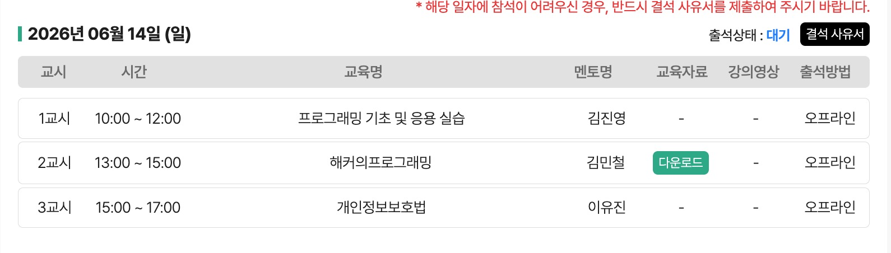

학습 목표
- C에서 파일을 열고 읽고 쓰고 닫는 기본 생명주기를 설명한다.
- JSON Object와 JSON Array의 차이를 이해하고 C 구조체와 연결한다.
- 정적 분석과 AST가 보안 약점 탐지 과제로 이어지는 이유를 정리한다.
오프라인 1-4
C 파일 입출력, JSON 처리, Git/GitHub, 정적 분석과 AST 과제를 하나의 흐름으로 연결한다.
2일차 첫 강의는 프로그래밍 기초를 조금 더 심화한 실습으로 진행되었다. 사전에 C 언어 컴파일 환경을 준비하고, 실습 자료를 받은 뒤 파일 입출력, JSON, Git/GitHub, 정적 분석, AST 과제로 이어졌다.
강사는 파일을 읽고 쓰는 작업이 바이러스나 일반 프로그램 모두에서 많이 쓰이는 기본 동작이라고 설명했다. 파일을 열고, 읽거나 쓰고, 닫는 흐름은 단순하지만 이후 JSON과 정적 분석까지 이어지는 기반이 된다.

C에서 파일 입출력은 fopen으로 열고, fputs, fgetc, 줄 단위 읽기 같은 함수로 처리한 뒤, fclose로 닫는 흐름이다. 강사는 이 짝이 맞지 않으면 당장 눈에 띄지 않아도 장시간 실행되는 프로그램에서 리소스 누수가 생길 수 있다고 설명했다.
모드는 크게 r, w, a를 먼저 이해하면 된다. w는 기존 내용을 덮어쓸 수 있으므로 조심해야 하고, 기존 내용 뒤에 붙이고 싶으면 a를 쓴다.
#include <stdio.h>
int main(void) {
FILE *fp = fopen("test.txt", "a");
if (fp == NULL) {
perror("fopen");
return 1;
}
fputs("hello\n", fp);
fclose(fp);
return 0;
}| 모드 | 의미 | 주의점 |
|---|---|---|
r | 읽기 | 파일이 없으면 열기에 실패할 수 있다. |
w | 쓰기 | 기존 파일 내용이 덮어써질 수 있다. |
a | 추가 | 기존 파일 뒤에 내용을 붙인다. |
녹취에서 강사는 파일을 닫지 않으면 단순한 스타일 문제가 아니라 리소스 누수가 된다고 설명했다. 파일, 소켓, DB 연결, 동적 메모리는 모두 운영체제 관점에서 자원을 차지한다. 한두 번은 괜찮아 보여도 서버가 오래 실행되면서 누수가 반복되면 CPU와 메모리, 파일 디스크립터가 줄어들고 결국 프로그램이 멈출 수 있다.
보안 관점에서는 이 누수가 서비스 거부 취약점으로 이어질 수 있다. 공격자가 의도적으로 예외 경로나 실패 경로를 반복 호출해 닫히지 않는 리소스를 쌓게 만들면, 정상 사용자가 서비스를 쓰지 못하는 상태가 된다. 그래서 파일 입출력 예제에서도 성공 경로뿐 아니라 실패 경로와 중간 반환 경로를 함께 봐야 한다.
FILE *fp = fopen("access.log", "a");
if (fp == NULL) {
perror("fopen");
return 1;
}
/* 작업 중간에 return하거나 예외 경로로 빠질 때도 fclose가 필요하다. */
fprintf(fp, "request handled\n");
fclose(fp);fopen을 찾으면 같은 함수 안에서 모든 경로가 fclose로 이어지는지 확인한다.두 번째 주제는 JSON이었다. JSON은 JavaScript Object Notation에서 출발했지만, 지금은 여러 언어와 프로그램 사이에서 데이터를 교환하는 대표 포맷이다. 강의에서는 key-value 구조, 중괄호로 표현하는 Object, 대괄호로 표현하는 Array를 먼저 잡았다.
Object는 이름이 붙은 값들의 묶음이고, Array는 여러 값을 순서대로 담는 구조다. Array 안에 Object가 여러 개 들어갈 수 있고, Object 안에 Array가 들어갈 수도 있다.
{
"name": "whitehat",
"age": 4,
"missions": [
{"id": 1, "type": "file-io"},
{"id": 2, "type": "static-analysis"}
]
}{ }로 감싸며 key와 value를 가진다.
[ ]로 감싸며 여러 값이나 객체를 순서대로 담는다.
강의는 단순히 JSON 문자열을 출력하는 데서 멈추지 않았다. 실제 작업에서는 JSON 안의 객체를 하나씩 꺼내 구조체 배열에 옮겨 담아야 한다. 그래서 구조체, 동적 메모리 할당, 배열 포인터까지 함께 등장했다.
핵심은 JSON Array의 길이를 구하고, 그 길이만큼 구조체 배열을 동적 할당한 뒤, 각 Object의 필드를 구조체 멤버로 옮기는 흐름이다. 이 과정은 이후 AST가 JSON 형태로 나올 때도 다시 쓰인다.
id, type 같은 필드를 꺼내 구조체에 저장한다.파일 입출력과 JSON을 마친 뒤에는 Git과 GitHub가 왜 등장하는지 설명했다. Git은 형상 관리 도구이고, GitHub는 저장소를 온라인에서 관리하고 공유하는 서비스다. 과제 버전 1, 2, 3처럼 파일명을 늘리는 대신, 커밋 단위로 변경 이력을 남긴다.
보안 관점에서 커밋 히스토리는 매우 유용하다. 어떤 커밋에서 빨간 줄로 삭제된 코드와 초록 줄로 추가된 코드가 보이면, 그 변경이 버그를 고쳤는지, 취약점을 만들었는지, 특정 패턴을 남겼는지 추적할 수 있다.
삭제된 줄과 추가된 줄을 비교해 의도를 추정한다.
특정 함수, 조건, 예외 처리가 어떻게 바뀌었는지 본다.
수정 전후 코드를 모아 자동 탐지·자동 수정 연구로 이어갈 수 있다.
강의 원문에서는 Jenkins 같은 유명 오픈소스 프로젝트의 커밋 히스토리를 예로 들며, 빨간 줄과 초록 줄을 보는 이유를 설명한다. 빨간 줄은 삭제된 코드, 초록 줄은 추가된 코드다. 취약점 수정 커밋을 보면 “어떤 코드가 위험했고, 어떤 검증이나 조건이 추가되었는지”를 역으로 배울 수 있다.
오픈소스 버그 헌팅을 할 때는 무작정 전체 코드를 읽기보다, vulnerability, XSS, injection 같은 키워드가 들어간 커밋을 먼저 보고 그 프로젝트에서 자주 터지는 패턴을 잡을 수 있다. 같은 XSS라도 템플릿 엔진, 입력 위치, escaping 함수, 라우팅 구조에 따라 트리거되는 방식이 달라지므로 프로젝트별 맥락이 중요하다.
git log --oneline --grep "vulnerability"
git log --oneline --grep "XSS"
git show <commit-id>
# 빨간 줄은 삭제된 코드, 초록 줄은 추가된 코드다.
# 취약점 수정 커밋을 보면 그 프로젝트의 실제 버그 패턴을 역추적할 수 있다.| 커밋에서 볼 것 | 왜 중요한가 | 정적 분석 과제와 연결 |
|---|---|---|
| 삭제된 취약 코드 | 실제 버그가 어떤 형태였는지 알 수 있다. | 탐지할 AST 패턴 후보가 된다. |
| 추가된 검증 코드 | 프로젝트가 선택한 방어 방식을 알 수 있다. | 자동 수정 또는 경고 메시지 설계에 도움된다. |
| 테스트 추가 여부 | 재발 방지를 어떻게 확인하는지 알 수 있다. | 탐지 결과 검증 기준을 만든다. |
마지막 핵심은 정적 분석이었다. 정적 분석은 프로그램을 직접 실행하지 않고 코드 형태와 메타데이터를 보고 취약점 또는 보안 약점이 있을 가능성을 계산하는 방식이다. 테스트 케이스로 특정 메소드를 실행하는 동적 분석과 다르게, 컴파일 후 얻을 수 있는 구조를 분석한다.
강의에서 AST는 작성한 코드를 통일된 트리 구조로 바꾼 결과로 설명되었다. 사람마다 띄어쓰기, 변수명, 줄 배치는 다르지만 AST로 바뀌면 구조를 기준으로 패턴을 찾을 수 있다. 그래서 AST가 JSON으로 표현되고, 앞에서 배운 JSON 처리가 과제로 이어진다.
# AST 기반 점검은 코드 문자열이 아니라 구조를 본다.
if node.kind == "CallExpr" and node.name == "strcpy":
report("경계 검사가 없는 문자열 복사 가능성 확인")과제는 AST 구조 분석기 제작과 버그 패턴 탐지 맛보기로 안내되었다. 기본 항목은 PDF 설명 중심이고, 가산점 성격으로 오픈소스에서 버그 패턴을 탐지해 보는 방향이 제시되었다.
AST 과제는 “코드를 트리로 바꾼다”는 설명에서 끝나면 막막하다. 실제로는 소스 코드, AST JSON, 탐지 규칙, 결과 보고를 분리해 생각하면 된다. 사람이 보기에는 변수명과 줄바꿈이 달라도 AST에서는 함수 호출, 조건문, 대입문 같은 구조가 드러난다.
| 단계 | 해야 할 일 | 실수하기 쉬운 점 |
|---|---|---|
| 입력 준비 | 분석할 C 소스와 AST로 변환된 JSON을 준비한다. | 소스 문자열만 검색하면 공백·주석·변수명에 흔들린다. |
| 구조 읽기 | 함수 호출, 인자, 대입, 조건문 노드를 구분한다. | JSON Object와 Array 계층을 혼동한다. |
| 패턴 정의 | 위험 함수나 검증 누락 조건을 규칙으로 만든다. | 함수 이름 하나만 보면 오탐이 많아진다. |
| 결과 설명 | 어떤 노드 때문에 위험하다고 판단했는지 근거를 남긴다. | 탐지 결과만 출력하고 이유를 쓰지 않는다. |
긴 STT 원문을 문장 흐름에 맞춰 문단으로 나누어 정리본과 비교하기 쉽게 만든 보기다.
조 및 응용 실습이라는 과목으로 조금 더 심화된 내용을 해보겠습니다. 화면 공유를 좀 하고 아 네 감사합니다. 네 화면이 이렇게 보일 건데요. 저희가 오늘 할 거는 총 5가지 파트가 돼요. 네 그 중에서 실습 자료라고 되어 있는 게 있는데 여기서 먼저 파일을 다운받읍시다. 이거 링크 제가 채팅방에 드릴 테니까 이거 좀 먼저 다운받죠. 다운받아볼게요. 다운받아볼게요. 다운받아볼게요. 다시 이제 ppt 보시면 되는데 사전에 말씀드린 대로 오늘은 c언어 컴파일 환경이 준비되어 있어야 합니다. 그래서 다들 지금 먼저 헬로월드 같은 거 출력해보시고 잘 되는지 따로 각자 체크해보시면 좋을 것 같고요. 아 네. 네 잘 다운받으시고 넘어가 볼게요. 어 c언어 중에서 오늘 파일 입출력이라는 거 이걸 먼저 해볼 건데 여러분들이 파일을 읽고 쓰고 하는 작업들을 굉장히 많이 하게 될 겁니다. 우리가 알고 있는 바이러스들도 파일 입출력 많이 하고 아니면 우리가 알고 있는 프로그램들 다양한 프로그램들이 다 파일을 쓰고 삭제하고 읽어오고 이런 것들을 많이 합니다. 그래서 이것들을 먼저 기본적으로 살펴보고 응용해서 제이슨이라는 거 살펴보고 마지막으로 정적 분석에 대해서 살펴보고 마무리할 거예요.
파일이 입출력이라고 하면 인풋이랑 아웃풋 이렇게 두 가지로 구분할 수 있고요. 이니 파일 읽기 쓰기가 아웃 그래서 이 파일이 오픈되는 것 그리고 라이트되는 것 클로즈 되는 것 이게 하나의 라이프사이클입니다. 파일? 여기 실습자료 링크 도블밑에 있어요. 다운 받아지시나요? 아 여기는 구글 입장 안 들어와 있어요? 그럼 기다려 보십시오. 그걸 몰랐네. 네 이제 하여겟습니다. 안 했어. 이걸 안 하고 있었네. 저희 실습자료 링크 여기 있고 네. 네. 네. 네. 네. 네. 네. 네. 네. 네. 네. 네. 네. 네. 네. 네. 네. 네. 네. 네. 네. 자, 다들 다운 잘 받으셨을 것 같으니까 진행을 해보겠습니다. 다시 말씀드리면 파일 입출력이라는 걸 할 거고 파일을 열고 라이트하거나 리드하고 파일을 닫고 하는 게 하나의 라이프사이클이에요. 근데 이 클로즈를 안 하게 되면 당장 문제가 생기진 않아요. 근데 이걸 안 했을 때 혹시 여러분들 무슨 문제가 생길지 아시나요? 파일을 열고 읽거나 썼어. 그 다음 파일을 근데 코드로 닫지 않았어. 혹시 뭐 이런 거 공부해보신 분 있으신가요? 안 닫았을 때 무슨 일이 일어난다.
오류? 오류가 나중에 발생할 수 있죠. 롱러닝 시스템에서 발생할 수 있는데 이거는 이제 이따가 다시 한번 설명할게요. 무슨 문제가 발생할 수 있을지는. 자 그리고 파일은 모드들이 좀 여러 가지가 있는데 그 중에서 한 세 가지 이해하시면 됩니다. R모드, W모드, A모드 있고 하나하나 다 살펴볼 거예요. 그래서 파일을 열 때는 우리가 C언어 함수로 Fopen, 파일 닫을 때는 Fclose 이 두 가지를 계속 쓸 거예요. 이게 쌍이 맞지 않다. 코드에 이게 쌍이 없다. 하면 또 문제가 생기는데 무슨 문제일지도 이따 살펴보기로 하고 그리고 오른쪽에 있는 이 Get, F, Get, C, F, Push 뭐 이런 함수들도 오늘 다 같이 살펴볼 겁니다. 자 그래서 우리 파일 언더바 1.c 파일이 있습니다. 그거를 실행해볼까요. 우리? 실행하고 코드 설명드릴게요. 이렇게 있을 겁니다. 파일 언더바 C 1.c 자 여러분들 뭐 실행 환경은 각자 다를 거기 때문에 실행을 한번 해보죠. 저는 이렇게 할게요. 네 그러면은 파일 열기 성공이라고 뜰 겁니다. 자 파일 열기 성공이 뜰 거고 좀 기다려 볼게요.
다들 잘 실행되나요? 오케이. 좀 해봅시다. 여러분들이 이제 끝나고 과제도 하셔야 될 텐데 이걸 잘 알고 있어야 과제를 할 수 있으니까 잘 들어보세요. 아이고 네. 뭐 위에 있는 거 다 기본적인 거니까 넘어가고 중요한 건 파일을 쓰여 넣어서 다룰 때 이 파일이라는 구조체가 있어요. 파일 포인터를 하나 만들어야 되고 근데 이것만으로는 아직 파일이 만들어지지 않았죠. 값을 넣지 않았죠. 값을 넣지 않았으니까. 그래서 우리는 파일을 연동할 때 이 fopen이라는 함수를 씁니다. 첫 번째는 파일명 두 번째는 모드. 근데 모드가 w a r 모드가 있어요. 순서대로 write겠죠. write. write. write고 append고 read에요. 자 근데 지금 a 모드. 어펜드로 열었어요. 여러분들 근데 이런 test.txt 파일 만든 적이 없었는데 실행하니까 여기 밑에 생겼을 거예요. test.txt 파일이 자 그리고 이 파일을 객체를 얻었다는 요는 fp가 null이냐 null이냐 그리고 null이지 않느냐 이렇게 구분을 하는데 null이면 이 파일을 못 열었다는 뜻인 거고 그러니까 파일에 대한 위치를 찾지 못했다는 거예요.
포인터를 획득 못했고 그리고 l도 떨어지면 파일이 정상적으로 열렸다는 거 그리고 마지막 fclose 그래서 이 코드가 파일 처리의 가장 기본적인 코드예요. 여기가 이제 첫 번째로 오픈하는 거고 두 번째가 체크하는 거고 세 번째가 클로즈하는 거 여러분들이 이 코드 주석 처리한 다음에 실행해도 지금 당장은 별 지장 없어요. 뭐 이거 삭제해도 근데 여러분들이 이거를 만약에 주석 처리하거나 코드를 안 놨다 하면 무슨 일이 발생하냐면 leak이라는 게 발생합니다. 정확히 말하면 리소스 leak이라는 게 발생해요. 뭐 나중에 관심 있는 분들은 더 찾아보면 나오겠지만 우리가 자바를 쓰든 파이썬 쓰든 C를 쓰든 이런 파일들 동쪽으로 우리가 어떤 메모리에서 할당하는 것들 이런 것들을 다 리소스라고 하거든요. DB, 소켓, 파일 리소스들을 열고 read, write 엄청 하다가 마지막에 클로즈를 안 하면 이게 영영 메모리에 상주되게 돼요. CPU 자원 쓰게 되고 메모리 자원 쓰게 되고 그러니까 계속해서 사용 가능한 공간들이 줄어들게 되겠죠. 그러다 보면 계속해서 leak 발생, leak 발생, leak 발생하다가 어느 순간 프로그램이 떡나요.
터집니다. 이거 응용해서 도스 취약점도 발생시킬 수도 있는 거고 그런 식으로 되는 아주 무시무시한 시나리오가 있기 때문에 클로즈를 항상 잘해야 돼요. 그리고 기본적으로 살펴봤으니까 조금만 더 난이도 있는 거 해보죠. 파일2, 파일2 갈게요. 파일2 가보시면 이렇게 코드가 있어요. 그리고 밑에 주석 이렇게 쭉쭉쭉쭉 있는데 이것도 한번 실행을 해보면 기본적으로는 뭐예요? 이거 그냥 텍스트.txt 파일에 있는 거 R모드니까 쓰기 권한 없고 읽기 권한으로 만든 거고 여기까지 이제 해석이 될 거예요. 자 근데 이제 한 문짝씩 읽어오는 거 그리고 문자를 단위로 덩어리로 읽어오는 거 두 가지를 해볼 겁니다. 읽어오는 거 자, 첫 번째로 여기 주석을 풀어볼게요. 여기 주석 푸시고 fc 되어있는 거 주석 풀고 자 그러면은 이렇게 주석이 풀려있고 한번 그대로 실행을 해볼게요. 해보면 뭐 워닝 뜨는 거는 지금 뭐 무시하고 오류 같은 건 없지만 아무것도 나오는 게 없어요. 지금 뭐 실행되는 게 없죠. 근데 여기 텍스트 파일 가가지고 hello nice 뭐 이런 식으로 해볼까요?
hello 써볼까요? hello 쓰고 fgash로 한번 여러분들 읽어봅시다. 이거 풀고 자 여기 fgash라고 되어있는데 뭐 eof 있고 뭐 푸차 있고 이런 거는 코드 실행하고 말씀을 드려볼게요. hello라고 썼을 때 이렇게 프로그램이 자동으로 종료되면 실행은 잘 된 거고 근데 여기 텍스트 파일 가가지고 아 지워볼게요. 지우고 지우고 나서 다시 한번 실행해볼게요. 파일 열기 성공 나오고 그 다음에 카운트 뭐 카운트 근데 여기 뭐 들어온 거 없죠? 0 네 여기까지 일단 실행 동작은 다들 확인됐을 거예요. 그래서 기본적으로 이 fgash라는 건 뭐냐면 f는 파일이고요. get은 당연히 가져오다 라는 뜻이고 c는 캐릭터 그러니까 한 문자씩 가져오겠다 하는 함수예요. 근데 여기다가 이제 뭐 hello world라고 했으면 이거 지금 몇 글자죠. 여러분들? 컴퓨터는 이걸 몇 글자로 해석하나요? 이거 열한 글자인가요? 몇 글자인가요? 이거 열한 글자입니다. 한번 이거 hello 띄어쓰기 하고 world 한 다음에 다시 실행을 해볼까요? 여기다 써야겠네 여기 여기다 써야겠네 hello 여기 열한 글자 뜨죠?
왜냐면은 우리 뭐 ASCII 코드 표라는 게 여러분들 다들 아시겠지만 이 띄어쓰기 스페이스바도 하나의 문자로 처리하기 때문에 그 카운트가 증가되게 됩니다. 그리고 여기 eof라고 되어 있는데 이것도 정말 많이 쓰이는 코드 중에 하나고 eof end of 파일입니다. 즉 이 파일을 한 글자씩 가져오라고 코드는 써긴 했지만 언제까지 가져오냐? 그거 정할 기준이죠. 근데 이 eof라는 게 있어요. 사실 값으로만 보면 마이너스 1입니다. 그래서 이 f getc 함수에서 한 문자씩 읽어와요. 근데 이 가져온 게 결국 ASCII 코드표로 바꾸면 숫자잖아요. 숫자 값이 예를 들어 마이너스 1이다. 다 읽어온 겁니다. 그래서 우리는 파일을 읽어올 때 마지막을 이렇게 체크할 수가 있어요. eof 이렇게 줘서 자 그리고 c에다가 한 문자씩 들어왔는데 그거를 또 put, ch 해가지고 한 문자씩 또 출력을 해요. 그래서 실행했을 때 헬로월드가 통째로 나오긴 했지만 반복문 돌면서 h 가져와서 마이너스 1이랑 비교하고 h 출력하고 또 e 가져와서 출력하고 또 count 1씩 증가시키고 그냥 계속 반복돼서 나온 겁니다.
이렇게 이해해주시면 되고 그리고 마지막에 count가 다 증가됐으면 출력을 해서 출력을 해서 11글자 볼 수 있고 이거는 이제 여러분들이 프로그래밍 하면서 읽어올 때 f getc로 읽어올 수도 있고 아니면 밑에 있는 f getc로 읽어올 수도 있는데 상황에 따라서 선택하면 됩니다. 아니면 뭐 코드를 봤는데 f getc가 있든 f getc가 있든 이제 해석을 할 수 있게 되겠죠. 자 이거 주석 처리하고요. 밑에 f getc로 갈게요. k-s k-s로 해서 이것도 한번 실행해볼까요? 파일 열기 성공 끄고 자 텍스트 파일 hello world가 여기 담겨있고요. 파일 두 명 있다. 이거는 어떻게 돌아가냐면 여러분들 배열 다들 배우셨을 겁니다. 이거는 문자열 두 칸 저장할 수 있는 배열이고 f getc는 이렇게 동작해요. 첫 번째 이 temp 두 칸짜리 배열을 주고 그리고 2바이트씩 읽어올 겁니다. 근데 어디서 읽어올 거냐 해서 이 파일을 줘요. 그래서 총 세 가지 파라미터를 받고 f getc를 한번 하면 2바이트씩 가져옵니다. 근데 가져오는데 만약에 가져왔는데 널 깝시다.
하면은 더 이상 가져올 게 없는 거고 그리고 여기서 출력을 하는 거죠. 마지막 f close까지 하게 되고 그래서 여기도 보면은 2바이트씩 가져오겠다 해서 테스트에다가 좀 hello world nice to meet you 그리고 여러분들이 실행을 해보시면은 문자열씩 가져올 겁니다. hello world nice to meet you 문자로 다 가져오는데 두 개씩 두 개씩 두 개씩 출력을 하는 거예요. 가져와서. 두 개씩 두 개씩. 두 개씩 두 개씩 두 개씩 출력을 하는 거예요. 가져와서. 두 개씩 두 개씩. 네. 그래서 기본적으로 우리가 과제 할 때나 앞으로 시원어와서 파일 처리할 때 읽어오는 함수는 이 두 가지 정도 알아두시면은 좋을 것 같습니다. f getc, f get s. 함수 원형을 좀 다시 살펴보면 여기 f get c 보면 return 타입이 int. f put c. return 타입 이렇게 있고 get s는 캐릭터 포인터가 return이 돼요. 그래가지고 우리가 방금 f get s에서 if 조건 체크 어떻게 했죠? null 체크했잖아요.
eof가 아니라. 못 가져오면 null 주는 겁니다. 가져올 문자열 포인터가 없으니까 그래서 null return 하는 거예요. 그래서 이렇게 이해해 주시면 돼요. 뭐 여러분들이 잘 아시는 f print f, scan f 이런 것도 있는데 이거는 여러분들이 항상 scan f, print f 하던 거에서 파일 포인터 파라미터만 추가된 거기 때문에 크게 어려움 없이 쓸 수 있을 겁니다. 그리고 마지막으로 f read랑 f write 같은 게 있는데 이것도 정말 많이 쓰입니다. 압성 코드들이나 아니면 압성 코드 분석할 때도 많이 쓰는데 이거는 사실 텍스트 데이터가 아니라 바이너리 데이터 읽어올 때 씁니다. 그래서 요즘에는 이건 제 경험인데 저도 바이너리 좀 분석을 할 때 f read 해가지고 그냥 다 가져온 다음에 요즘엔 먼저 ai한테 뭐 이상 없는지 한번 탐지도 해보고 그런 식으로도 좀 쓰고 있습니다. 아무튼 이런 게 있다. 그래서 지금 파일 1이랑 파일 2 까지 모두 해봤고요. 일단 파일 3를 해볼 건데요. 파일 3를 write 입니다. write.
read 했으니까 write 하는 방법은 f push 이렇게 있습니다. push. 이렇게 해서 이것도 한번 실행을 해보죠. 그 다음에 텍스트 txt 파일을 가보면 abx 잘 들어와 있을 겁니다. 잘 들어와 있을 거고 자 근데 이 파일은 이번에 어떻게 열었죠? w로 열었죠. 근데 여러분들이 이것도 주의해야 될 게 우리 방금 텍스트 파일에 hello nice to me too 있었잖아요. 근데 이걸 w로 열었어. 그랬더니 실행했더니 abx로 덮어쓰잖아요. 그래서 우리가 w로 열면 뭘 알아야 되냐면 기존값 날아갑니다. 날아간. 덮어쓰기가 돼요. 항상 조심하셔야 됩니다. 근데 이거 안 덮어 쓰고 뒤에 이어서 붙여서 쓰고 싶으면 어떻게 해야 되냐. 이거 a 모드로 열면 돼요. 자 실제로 지금 이거 실행했더니 abx 들어가 있어요. 근데 이거를 위에 거 포인터 주석 처리하고 a 모드로 열어볼게요. a 모드. 그리고 나서 f 푸시 하던 거 그냥 그대로 해볼게요. 이랬을 때 실행 결과가 abx만 나온 게 아니라 abx abx 이렇게 나와야겠죠. 이렇게 append가 된 걸 볼 수 있어요.
그래서 지금 모드 하나 뭘 주냐에 따라서 여러분들이 이게 덮어쓰지냐 추가되냐 추가되냐 이거를 선택할 수가 있게 됩니다. 자 그리고 f 푸시 이것도 설명할게요. 이거 위에는 계속 설명했으니까 한 문자를 파일 포인터 줘가지고 그 파일에다가 써라 써라 써라 하는 겁니다. 그 다음에 f 클로즈 하고 지금 뭐 근데 뭐 있으나 마나긴 하지만 항상 이거를 넣어두셔야 됩니다. 자. 얼마나 이게 어려우면 이 리소스 리그를 자동으로 탐지하고 자동으로 수정해주는 파티어 학회 논문들도 많아요. 이게 얼마나 어려운 작업이고 사람들 얼마나 놓치면 이런 것도 굉장히 많습니다. 다 됐고 다 됐고 자 그럼 이제 파일 for부터 오늘의 본격적인 실습들을 시작해 볼게요. 파일 여는 거 해봤고 파일 읽는 거 해봤고 파일 쓰는 거 해봤어요. 자 그 다음에 이걸 해 볼 건데 이거 그 전에 말씀드릴 게 있어요. 파일 std in std out 라고 하는 것도 결국 우리의 키보드와 모니터를 개체화 해 놓은 거예요. 포인터화 해 놓은 건데 이게 0번일 때 1번일 때 in은 입력하는 거 out은 출력하는 거 이렇게 이해해 주시고 그 다음에 파일 for로 가볼게요.
파일 for 파일 for 파일 for 파일 for를 가보면 코드가 완성이 되어 있죠. 사실 여러분들한테 이거를 오늘 실습을 해보려고 했는데 시간이 너무 좀 짧아가지고 제가 코드를 좀 작성을 해왔어요. 해설하는 걸로 해볼게요. 자 순차적으로 해석해 볼게요. 순차적으로 파일 포인터 있어요. 그 다음에 백 칸짜리 버퍼를 만들어 놨어요. 그 다음 뭐 하나요. 이거 테스트 라인이라는 텍스트 파일 만들어서 파일 포인터 내놔라 하는 거죠. 여기까지가 이제 기본적인 코드인 거고 여러분들이 이거는 이제 쉽게 쉽게 넘어갈 수 있어야 돼요. 지금 근데 파일이 없지만 실행하면 파일이 생기겠죠. 이렇게 됐고 그 다음에 int i 줘가지고 이거 다섯 번 반복하라는 거죠. 그래서 1라인 2라인 그래서 다섯 번 사용자한테 입력을 받을 겁니다. 이렇게 쭉쭉쭉 있고 입력하세요. 맘셋이라고 있는데 이거는 버퍼가 지금 백 칸짜리라고 되어 있는데 처음 입력할 때는 뭐 열 글자만 입력할 수도 있고 두 번째는 뭐 50 글자 세 번째는 다섯 글자 입력할 수 있어요. 근데 버퍼를 같이 쓰고 있으니까 그 때마다 그냥 다 초기화 시켜버리는 겁니다.
기존 값 다 없애버리는 거고 없애버리고 그 다음에 파일 버퍼 뭐 길이만큼 해서 마지막에 이거 문자열 이거 넣어주고 그 다음에 fpush를 하는 거죠. 이 파일에다가 파일에 있는 내용 써라 지금 하고 있는 거예요. 써라. 그 다음에 밑에 있는 게 read인데 일단 read는 잠깐 정지하고 이거 여기 주석 처리한 다음에 fpush부터 해볼게요. fpush 자 이렇게 하고 실행을 해볼까요? 푸시 여기 뭐야? 여기서 실행해야겠다. 파일 4에서 네. 그럼 파일이 잘 열릴 거고 근데 멈췄죠? 멈췄어. 멈췄어. 아 여러분들이 이게 주석 처리가 돼 있구나. 여러분 이거 주석 풀고 실행하셔야 돼요. 이거. 이거 fkets. 여기 fkets 이거 주석 풀고 시작할게요. 주석 풀고. 그러면은 포문이 이렇게 생겼고 여기서 실행을 해볼게요. 실행하면 파일이 생겼을 거고 아직 입력도 안 했는데 그리고 입력을 해볼게요. 뭐 hello nice to with you 여기 fkets가 있는데 자 여기 여기 fkets가 있는데 여기 fkets가 있는데 자 여기 어떻게 지금 동작을 하는 거냐 여기 fkets가 있는데 여기 fkets가 있는데 자 여기 어떻게 지금 동작을 하는 거냐 우리 fkets 파일 위드 할 때 썼어요.
파일 2 보시면 fkets 했는데 마지막에 어떤 파일에서 읽어올지를 파일 포이터 줘가지고 가져온다 했잖아요. 근데 지금은 뭐예요? 마지막에다 뭐 stdin이라는 걸 줬어요. 이게 뭐냐? stdin이 제가 뭐라 했죠? 지금 표준 입출력에서 입력하는 거 즉 우리 지금 상태에서는 키보드겠죠? 키보드 파일 객체화 한 거고 그 파일로부터 읽어오겠다 한 거예요. 파일 버퍼에다가 그러니까 즉 버퍼가 지금 비어 있으니까 안 비어 있으면 그 버퍼에서 꺼내와가지고 사이즈만큼 가져와서 쓸 텐데 그게 아니라 지금은 이 버퍼가 지금 아무것도 없는 비어 있는 상태이기 때문에 우리 키보드에 입력을 기다리고 있는 거예요. 이렇게 입력하면은 여기 배열 버퍼에 들어가는 거죠. 들어가고 그게 write가 한 줄 되는 겁니다. 두 번째로 또 쓰면은 여기서 또 버퍼가 비워져 있으니까 뭐가 있으면은 꺼내오겠지만 없으니까 버퍼 채워라 하고 기다리고 있고 이렇게 쭉 되고 이렇게 되고 이렇게 해서 우리는 파일을 열어보면 저장이 된 걸 볼 수가 있습니다. 자 그리고 개행이 된 이유 엔터가 다 된 이유 여기다가 우리가 마지막에 또 개행도 넣었어요.
개행도 넣고 그래서 파일 버퍼를 채우는 게 여기 여기 f-get-s고 채웠으면 마지막을 개행으로 바꾸고 그리고 그 채워놓은 버퍼를 파일에다 한 줄 써라 하는 게 마지막에 f-put-s 이것도 밑에 파일 포인터 가르쳐 줬죠. 파일 포인터 이렇게 이해해 주시면 되고 됐어요. 자 그러면 여기 위에 쓰기 하던 포문을 주석 처리를 하고 읽어오는 거 해 볼게요. 읽어오는 거 방금 f-get-s로 키보드에서 읽어오는 거 해 봤고 이제는 파일 썼으니까 파일에서 읽어오는 거 해 볼게요. 자 테스트라인 txt 파일이 있고 이게 read-mode 해가지고 파일 뭐 열기 실패 성공 있을 거고 마지막에 여기 while 이게 핵심입니다. 이것도 한 줄 한 줄씩 해석을 해 보면 우리 f-get-s가 리턴 타입이 문자열 포인터라고 했어요. 문자열 포인터 포인터가 무엇인지 이것은 제 강의에 있으니까 잘 들어 주시고 자 그러면 f-get-s 한 게 이 덩어리인데 계속해서 가져오죠. while 돌면서 근데 못 가져왔을 때 널이 아닐 때까지 계속해서 f-get-s 호출해라 하는 거예요.
그 다음에 파일 버퍼 가져왔으면 출력하고 또 버퍼 memset 해주고 또 쓰레기 값들 섞여 있으면 출력할 때 이상하게 나오니까 자 그래서 이것도 실행을 해 보시면 아이고 버장이 안 되었네요. 자 실행을 해 보면 옥탈 열기 성공 어디였어? 여기서 해볼까 주소 처리를 하고 그 다음에 테스트 라인 뭐 여러분들 입력을 했으면 들어가 있겠죠? hello nice to be true 있을 거예요. 그리고 잘 읽어 가칠 거고 저도 좀 다시 써놓을게요. 이걸 안 써다 썼네. 잠시만요. 자 실행해서 파일 좀 쓸게요. 아이고 정신이 없네. 여기서 읽어. 자 파일 내용 쓰고 읽어 오시면 됩니다. 자 실행을 해 보죠. 아우 아우 아우 아우 계속 제 쪽에서 지금 못 써가지고 여러분들 잘 읽어 와 지시나요? fks로 해서? 네. 잘 읽어 와 질 겁니다. 아까 제가 실행했을 때도 네. 이런 식으로 파일 열기 성공한 다음에 하나씩 뜰 거예요. hello 썼으면 뜨고 또 nice 뜨고 또 to 뜨고 me 뜨고 me 뜨고 한 줄 한 줄씩 읽어 와 칠 겁니다. 그래서 확인해 주시면 되고 여기까지가 이제 파일 입출력의 기본이었고요.
됐습니다. 넘어갈게요. 네. 자 다음이 이제 이런 내용이긴 해요. 근데 이거는 우리 지금 할 건 아니고 나중에 여러분들이 파일 입출력을 더 해보고 싶다 하면 좋은 예시이기 때문에 따로 한번 만들어 보면 좋을 것 같습니다. 이렇게 해 주시고 이제 이걸 할 거예요. 이게 조금 더 어려울 수 있어요. 두 번째 제이슨 데이터라는 거 할 거고 네. 혹시 여러분들 제이슨이라고 아시나요? 제이슨 파신이랑 제이슨 만드는 거 다 해보셨죠? 네. 네. 네. 해보셨나요? 파이썬으로 하셨나요? 파이썬으로 하셨나요? 파이썬 C로 해봤어요? 이제 이걸 할 거예요. 이게 조금 더 어려울 수 있어요. 두 번째, JSON 데이터라는 거 할 거고 혹시 여러분들 JSON이라고 아시나요? JSON 파신이랑 JSON 만드는 거 다 해보셨죠? 해보셨나요? 파이썬으로 하셨나요? 뭘로 하셨나요? 파이썬 C로 해봤어요? 안 해봤어? JSON이라고 해서 풀네임으로는 JavaScript Object Notation이라 하는데 이게 원래는 그냥 JavaScript에서 객체 만들 때 쓰던 표기법 근데 이게 데이터 교환할 때 너무 포맷이 너무 좋으니까 우리가 이제 JavaScript에서만 쓰지 말고 다른 언어에서도 아니면 다른 프로그램에서도 데이터 교환할 때 쓰자 해서 만든 게 JSON이라고 있어요.
JSON은 T-value 형식으로 구성되어 있고 IP-value를 어떻게 구성하냐? 문법 두 개밖에 없습니다. 첫 번째는 JSON Object 두 번째는 JSON Array 중괄호를 열면 JSON Object 대괄호를 열면 JSON Array 이렇게 얘기해주시고 이렇게 얘기해주시고 이 JSON이라는 건 여러분들이 보안을 하든 개발을 하든 엔지니어가 되든 영업을 하든 떼려야 뗄 수 없는 그런 개념이기 때문에 여러분들이 꼭 알아두셨으면 해요. 첫 번째 JSON Object 보면 Key, Name이라는 Key, Age Key, White Key 세 가지 있고 그 다음에 Value들 있죠? 이게 Object Array는 대괄호로 있고 Object가 하나, 둘, 셋 이렇게 있는 거죠. 즉 Array는 안에다가 Object들을 여러 개 있는 거고 Object는 그냥 Key Value로 있는 거고 자 그러면 이렇게 된 예시에서는 Array가 하나와 그리고 Object가 여덟 개다 라고 이해해주실 수 있습니다. 중괄호 짝 개수 세면 돼요. 그래서 이걸 본격적으로 C 언어에서 JSON을 한번 다뤄볼 겁니다.
여러분들이 Python에서 너무 쉽게 다뤄봤을 거예요. 너무나도 그냥 Dictionary로 쉽게 있어가지고 C 언어에서 한번 다뤄봅시다. JSON 1 파일 열어가지고 JSON 1 열어두시고 코드가 이렇게 있을 겁니다. 여러분들을 위해서 제가 여기 JSON을 미리 만들어 놨어요. 여기 str 해가지고 문자열로 JSON이 들어왔다고 가정을 해볼게요. 아니면 여기서 서버 통신 해가지고 서버에서 리스폰스로 JSON이 들어왔다고 해볼게. 그러면 여기서 JSON 객체를 만들 수 있어요. 근데 어떻게 만들 수 있냐. 표준 라이브러리가 아니라 JSON 언더바 C라는 파일이 있기 때문에 우리는 JSON을 만들고 파싱하고 할 수 있어요. 이거 오픈소스로 있습니다. 자 그러면 JSON 객체가 만들어졌고 이 상태에서 사실 실행하면 아무것도 없어요. 사실. 그래서 JSON 객체가 만들어진 게 끝이고 자 근데 우리 이제 여기다가 하나하나 JSON 파싱하는 걸 해볼 거예요. JSON 1에서 요거를 한번 해보죠. 기본적으로 자 이거 자 여기다가 이거 한 줄만 써볼게요. 여러분들 JSON 프린트에서 JSON 프린트에서 JSON 프린트 아 이거 너무 좋다.
JSON 프린트하고 실행을 한번 해보죠. 네, 제이슨 프린트 실행 그러면 여러분들 결과가 잘 나오네요. 제이슨이 이렇게 보이는 걸 확인할 수가 있겠죠. 이거 가지고 이제 오늘 남은 시간 동안 실습을 계속 해볼 거고 과제도 이걸 엄청 응용한 과제가 나올 거예요. 정적 분석의 기초가 되는 게 그래서 여러분들이 꼭 잘 듣고 풀어주셨으면 좋겠습니다. 1기, 2기, 3기 때 이 제이슨을 응용해서 정적 분석 기초 과제를 드렸을 때 한 60에서 70% 정도는 제출을 하셔요. 근데 정확하게 푸시는 분들이 한 20% 정도 됩니다. 난이도가 좀 있어요. 근데 그분들이 탑 20을 좀 많이 하셨어요. 그러니까 여러분들이 꼭 잘 풀어주시면 좋을 것 같습니다. 그걸 하기 위해 제이슨 삽질 좀 더 해보죠. 제이슨 프린트는 그냥 제이슨 전체 다 클럭해주는 함수예요. 이거 뭐 그냥 함수고 하나하나씩 뽑아올 건데 제이슨은 한꺼번에 여기 예를 들어서 레드 값을 뽑아오고 싶으면 그냥 무턱대고 가져올 수 없어요. 하나하나 벗겨가야 됩니다. 첫 번째 제이슨 오브젝트 벗겨내고 두 번째 데이터라는 이거 뭐예요?
이거 데이터 어레이죠. 어레이 벗겨내고 어레이 안에서 제이슨 오브젝트 하나 가져오고 거기서 컬러를 지칭을 해서 레드를 가져와야 돼요. 되게 순차적으로 가야 하죠. 이거 어떻게 할 거냐 먼저 제가 전체 객체를 제이슨으로 만들었어요. 제이슨 만들었고 그다음에 여러분들 이거 하나만 씁시다 이 한 줄만 써보죠. 자, 이건 지금 뭐 하는 거냐 제이슨 객체 만들었잖아요. 만들었고 그다음에 데이터를 가져와요. 제이슨 객에서 파이썬에서는 사실 객체 만들었으면 뭐 루트라는 객체가 있을 때 그냥 이렇게 가져오면 돼요. 너무 쉽잖아요. 시어너에서는 좀 이런 작업이 필요합니다. 제이슨 객에서 가져오고 자, 그다음에 데이터는 어레이잖아요. 어레이 대괄우로 뭉쳐있으니까 그래서 요것도 한 줄 써볼게요. 제이슨 어레이 안에 랭 구하는 법 이것도 잘 기억해두셔야 돼요. 제이슨에서 오브젝트 어레이 가져오는 거 제이슨 객했고 랭스 가져오는 거 제이슨 랭 했어요. 오브젝트 사이즈 있죠. 그다음에 이거 풀고 랭스도 잘 가져와지는지 프린트 앱으로 인트 값 출력해볼게요. 여러분 이거 실행하면 랭스도 잘 가져와질 겁니다.
여기 7 보이시죠? 7 자, 그러면 우리 이 정도 폼은 다들 돌릴 수 있죠? 이거 랭스 해가지고 이 폼은 한 번만 돌려봅시다 폼은 돌리고 나서 해볼게요. 근데 여기 안에 있는 게 뭔지는 아직 모르겠지만 한번 이렇게 폼은 돌려볼게요. 써봐야 또 손이 익으니까 이 폼은 돌려볼게요. 이 폼은 돌려볼게요. 네 이제 풍 że 이게 이 코드는 뭐냐면 제이슨에서 뭔가 가져올 때는 제이슨 오브젝트를 주고 첫 번째로 주고 그 다음에 배열일 때는 어레인 인덱스 주고 아닐 때는 그냥 키값 줘서 가져오면 돼요. 그래서 제이슨 get 잘 기억해 주시고 근데 여기서 아이고 여기서 처음에 제이슨 get 해가지고 첫 번째 거 가져오면 뭐 가져와요? 데이터에서 첫 번째 거니까 이 제이슨 오브젝트를 가져올 겁니다. 이걸 가져와요. 그래서 오브젝트 가져오고 그 오브젝트 안에서 컬러 라는 키를 주고 컬러 뽑아와라 하고 있어요. 근데 get 스트링을 했잖아요. 그러면 get 스트링이 있으면 get 인트도 있고 뭐 이렇게 있겠죠? 추측할 수 있겠죠? 그래서 그거 응용해서 뽑아오면 되고 그래서 이거 컬러 값을 가져와서 추측을 하면은 레드 근데 첫 번째 오브젝트 이제 다 봤으니까 반부분 돌아서 두 번째 오브젝트에서 컬러 가져오면 그린 그래서 레드, 그린, 블루 뭐 시안, 뭐 마젠타 뭐 마젠타 쭉쭉쭉쭉쭉 이렇게 출력이 되는 걸 볼 수가 있습니다.
보이시나요? 출력 결과? 네 만약에 이거 뭐 실습하다가 궁금하신 거나 뭔가 안 된다 하면은 채팅창에 남겨주세요. 아니면 현장에서 질문 주실 게 좋고 그래서 이 첫 번째 예시에서는 우리가 배운 게 뭐냐 제이슨이 뭔지 형태 배웠고 제이슨 객체와 어떻게 하는지 배웠고 제이슨 크리에이트 하면 돼요. 그 다음에 제이슨에서 하나하나씩 뽑아오는 거 어떻게 하는지 제이슨 get 함수 쓰면 되는 거였고 그 다음에 제이슨의 어레이가 있을 때 length 어떻게 구하는지 json ran 함수 배웠고 전체 어떻게 생겼는지 보는 거 json print 배웠고 그리고 제이슨 오브젝트 안에서 오브젝트에서 특정 스트링이나 인트 가져올 때는 이 함수를 쓰면 됐다 까지 우리가 배웠습니다. 이제 이거 가지고 또 해보죠. 그럼 이 제이슨이 이거 어떤 식으로 쓰이냐 이런 거 쓰입니다. 예를 들어 우리가 네이버 같은 거 특정 웹사이트가 있어요. 특정 로그인 사이트가 있는데 아이디 패스워드를 우리가 입력을 하면 특정 네이버 서버든 포털 사이트의 서버로 가겠죠. 근데 갈 때 예를 들어서 내 아이디가 ABCD야 그리고 1234야 이런 식으로 그냥 슬래시 나눠서 아니면 뭐 규칙도 없이 보내는 게 아니라 우리는 이렇게 통신을 하겠다는 거예요.
제이슨으로 이런 식으로 이런 식으로 이렇게 보내야 포맷이 맞고 우리가 데이터를 나타나는 데 있어서도 범용성이 있는 형태다 이렇게 이해해 주시면 돼요. 리퀘스트도 이런 식으로 하고 리스폰스도 이런 식으로 하고 자매품으로 제이슨이라는 게 나오기 전에는 우리가 뭘 썼는지 혹시 아시나요. 제이슨 통신하기 전에 우리가 무슨 포맷 아시는 거 있나 XML이라고 이게 꺽쇠 해가지고 그게 좀 어려운 게 있어요. XML로 근데 점차 대부분의 시스템이 뭐 제이슨으로 하고 있죠. 그래서 우리가 제이슨을 이런 식으로 쓸 수 있다 자 그럼 두 번째 이게 제이슨2로 갈게요. 2 검정 제이슨 난이도랑 이런 것들이 어려워칩니다. 제이슨2 이렇게 있고 여러분들 이제 제이슨1에서 배운 코드가 있으니까 전체 제이슨 어떻게 생겼는지 한번 출력해 보세요. 이거 제이슨 어떻게 생겼나 먼저 보셔야 돼요. 그래야 과제 때도 잘 할 수 있을 겁니다. 이거 어떻게 생겼나 먼저 봐야 돼요. 먼저 보시고 어떻게 생겼는지 확인이 되셨다 하면은 우리 필습 한번 해봅시다 시간 좀 드릴 테니까 저랑 똑같이 출력할 수 있도록 여러분 코드 한번 짜보세요.
엔터나 스페이스 이런 건 상관 안 할 테니까 우리 지금 방금 배운 거 응용해서 어떻게 생겼는지 확인이 되셨다 하면은 어떻게 생겼는지 확인이 되셨다 하면은 우리 필습 한번 해봅시다 시간 좀 드릴 테니까 저랑 똑같이 출력할 수 있도록 여러분 코드 한번 짜보세요. 엔터나 스페이스 이런 건 상관 안 할 테니까 우리 지금 방금 배운 거 응용해서 이 결과 나오도록 파싱 해볼까요. 파싱이라는 건 제이슨 분석해서 원하는 거 뽑아오는 겁니다. 잠깐 시간 드릴게요. 질문 주셔도 좋고 질문 주셔도 좋고 안 보이시는 분들이 있나 보네 좀 올렸습니다. 이렇게 다 하신 분 있으면은 알려주세요. 그거 보고 진도 나가야 되니까 채팅창에다가 써주시면 좋을 것 같습니다. 힌트는 저희 방금 배운 걸로 다 할 수 있다 응용하는 겁니다. 프로그래밍도 하고 어디 여러분의 코딩 실력을 한번 볼까요? 파이썬으로 하면 다들 금방 할 것 같은데 파이썬으로 하면 다들 금방 할 것 같은데 파이썬으로 하면 다들 금방 할 것 같은데 파이썬으로 하면 다들 금방 할 것 같은데acional zarukt Einsch 감사합니다.
혹시 현장에서 다 하신 분 있나요? 손 한 번만. 아, 질구나? 오케이. 온라인에서 푸신 분들이 있나 보네. 여러분들 온라인이나 오프라인이나 GPT 쓰시면 안 됩니다. 지금 공부하는 거니까. 한 번 더 기다려볼게요. 한 3, 4분만. 시어너도 알아야 되고, 프로그래밍도 알아야 되고, 데이슨도 알아야 되고. 네, 고맙습니다. 네, 고맙습니다. 네, 고맙습니다. 네, 고맙습니다. 네, 고맙습니다. 네, 고맙습니다. 온라인 중간 체크 한 번 할까요? 온라인? 되신 분들은 뭐 따봉이나 채팅 하나만 보내주세요. 온라인. 쭉쭉 가야겠다. 오, 꽤 많이 하셨네. 따봉들이 아주 많네요. 따봉따봉. 네, 따봉 많이 올라오네요. 오케이. 자, 10번째 제이슨. 이거, 이렇게 결과 나오려면 어떻게 해야 되냐. 정답을 공개해보겠습니다. 제이슨이 이렇게 있고, 여러분들이 어떻게 생겼는지 보려면 제이슨 프린트를 하시면 되겠죠. 저희 일단 주석 처리하고. 네, 이렇게 생긴 제이슨입니다. 이렇게 생긴 제이슨. 근데 제가 출력 결과가 이렇게 있잖아요. 아이디랑 타입 다 뽑아오라고 했어요. 그러면 우리는 어떻게 파싱을 해야 될지.
전략을 짜야 됩니다. 결국 이 아이디, 이거 다 가져오라는 거잖아요. 이 어레이에 있는 거. 그럼 역으로 생각을 해보는 거죠. 이걸 가져와야 이걸 가져올 수 있겠죠. 그래서 여기까지를 어떻게 도달하는가. 이게 핵심인 거죠. 그럼 여기 도달하려면 어떻게 해야 돼? 여기 도달해야 되죠. 배터스. 그럼 여기 도달하려면 어떻게 해야 돼? 일단 제이슨이 있어야 되고. 그럼 이제 전략을 짜면 되죠. 제이슨에서 바로 바터스. 여기 들어오고. 그걸 오브젝트로 가져와서. 거기서 또 바터를 줘서 리스트를 뽑아오면 돼요. 리스트를 반복 돌리면서. 쭉쭉쭉 실행을 하면 되는 거죠. 마찬가지로 바터스 가져올 때는 이렇게 하면 되고. 토핑 가져올 때는 똑같이 리스트 가져오면 되고. 그래서 일단 이걸 가져와야죠. 이렇게 합시다. 일단 이걸 가져와야 돼요. 바터스 가져와야죠. 왜냐면 제이슨 오브젝트 있고. 바터스 가져와. 그 다음에 바터 가져와. 하면 되는 거. 그래서 이걸 루트로 줬으니까 저는. 제이슨 get을 써가지고. 그 루트 오브젝트에서 바터 가져와. 하는 겁니다. 지금. 바터를 가져왔어. 그러면 바터 오브젝트 뜨고.
바터가 근데 어레이잖아요. 제이슨 어레이로 지금 가져온 겁니다. 여기 지금. 어레이예요. 그러면 반복을 돌리려면 끝을 알아야 되니. length. 이렇게 하고. json length. 그래서 여기서 쓴 겁니다. 그리고 이 반복문을 우리는 쓸 수가 있죠. length만큼 돌아라. 하는 건데. 그 어레이에서 오브젝트 하나. 하나. 하나. 하나. 하나. 한 덩어리. 한 덩어리. 한 덩어리를 인덱스로 가져와. 하는 거고. 그 오브젝트에서 id 가져와. 타입 가져와. 하고 있는 겁니다. 이렇게 이해해 주시면 돼요. 그래서 출력하고. 근데 둘 다 스트링이니까. 게스트링으로 가져오면 되는 거. 자. 몸풀기 예시는 여기까지인 거고. 자. 몸풀기 예시. 여기까지 됐고요. 넘어가 볼게요. 다음은 json passing 3입니다. 3. 이건 여러분들이 구조체 동적 메모리. 이런 걸 좀. 공부를. 하셨어야 됩니다. json 3. 가볼게요. 이거 어떻게 생겼는지 한번 보시죠. 이거. json 3 근데. 한번 쭉 보시면은. 방금 거랑 똑같이 나올 겁니다. 자. 이렇게 쭉쭉 나와요. 여러분이 방금 이거 아이디랑 여러 가지 좀 뽑아왔을 건데.
보통 이런 식으로. 너가 다 해야 될 거에요. 그럼. 이제. 이제. 이제. 이제. 이제. 이제. 이제. 이제. 이제. 이제. 이제. 이제. 이제. 여러분이 방금 아이디랑 여러가지 뽑아왔을건데 보통 이런식으로 노가다 해서 뽑아오진 않아요. 실제로 일할때도 어떻게 하냐 랜스만큼의 동적 메모리 할당하고 그 제이슨 오브젝트를 하나의 구조체 형태로 만든 다음에 그 구조체에다 하나씩 객체화해서 때려넣는거죠. 이렇게 해서 어떻게 할 수 있냐 우리 한줄 한줄씩 해봅시다 아직 뭐 동적할당이랑 구조체 이런거 안 배우신 분들도 꽤 있을거기 때문에 위에다가 구조체 하나만 만들어볼게요. 구조체 하나 만들고 iba covering 아이디랑 타입을 뽑아올 거기 때문에 구조체국 만들고 만들고 나서 여러분들 프린트 해보세요. 뭐 아까랑 구조 비슷하긴 할 건데 어떻게 생긴 제이슨인지 한번 봅시다. 뭐 이렇게 생긴 제이슨이에요. 여기 있습니다. 자 그럼 이 상태에서 동점 발담을 해가지고 제이슨 파싱하는 거 인식을 해볼게요. 이거 하고 잠깐 쉬었다 합시다. 제이슨 크리에이트 했고 제이슨 프린트 했고 그 다음에 우리가 원하는 건 아까랑 똑같이 뽑을 건데 제이슨 갭하고 랭스까지 일단 좀 가져올게요.
아까 하던 대로 아까 하던 대로 뱃하고 랭스까지 좀 가져와요. 바터스랑 바터랑 이런 것들 그리고 여기에 바터 부조체 배열 동점 발담을 해볼 건데 답이 나와버리네. 결국 우리가 파겟으로 하는 게 바터 오브젝트들이기 때문에 바터 오브젝트를 구조체로 만들었고 그 안에서 여러 가지 바터들이 있으니까 우리 동점 발담을 이렇게 할 수 있어요. 동점 발담 이렇게 이렇게 바터 사이즈가 기본이고 근데 바터 랭스만큼 곱해야 연속된 배열 포인터가 나오겠죠. 바터 포인터가 천천히 합시다. 바터 포인터 나오고 이렇게 그럼 연속된 구조체 배열 포인터가 나온 거고 그럼 이제 이 어레이가 지금 값이 아무것도 파싱된 게 없는데 여러분들이 밑에다가 이거 한번 해보죠. 지금 우리 랭스만큼 바터 동점 발담했어요. 그러면 바터 어레이에 제이슨 파싱에서 값 저장 출력까지 해볼까요? 이거 여러분들 한번 또 챌린지로 챌린지로 여기다가 저장하셔야 돼요. 그래서 동점 발담해가지고 그 바터 구조체 배열을 저장하시고 출력하면 이런 식으로 나올 수 있도록 해보죠. 첫 수업 마지막 실수.
또 상황 파악을 위해서 온라인에서도 다 되시면 따봉 오프라인에서도 다 되시면 손 들어주시고 한 분 하셨고 온라인에서 합니다. 지금 춤입니다. 좌우 공적할당된 파터 구조체에다가 저장하셔야 돼요. 온라인에서는 조금씩 나오고 있네요. 오프라인도 상황 보고 해볼게요. 선두신 분들도 꽤 있네. 선두신 분들도 꽤 있네. 선두신 분들도 꽤 있네. 선두신 분들도 꽤 있네. 선두신 분들도 꽤 있네. 선두신 분들도 꽤 있네. 선두신 분들도 꽤 있네. 선두신 분들도 꽤 있네. 선두신 분들도 꽤 있네. 선두신 분들도 꽤 있네. 선두신 분들도 꽤 있네. 선두신 분들도 꽤 있네. 선두신 분들도 꽤 있네. 선두신 분들 간� w*** 선두신 분들도 꽤 있네. 선두신 분 Verfusion 선두신 분들도 꽤 있네. 반대로 개인 decían. 학생 성장 내 팔 któryrek発 scores 봐. 이거 해설은 5분 정도만 쉬었다가 할 건데 오픈하이린에서는 조용히 자리에 있어주시고 화장실이나 물 먹는 정도만 해주세요. 11시 15분에 다시 시작할게요. 그 전까지 또 푸실 분들은 푸셔도 됩니다. 그 이후에 해설하고 또 하겠습니다.
감사합니다. 네 감사합니다. 네 감사합니다. 네 감사합니다. 네 감사합니다. 네 감사합니다. 네 감사합니다. 네 감사합니다. 네 감사합니다. 네ối 감사합니다. 자, 구조체 배열 동적 할당 했잖아요. 여기다가 값을 넣어야 되는데 우리가 원하는 값이 뭔가요? 지금 아이디와 타입입니다. 근데 아이디의 자료형이 문자열이고 타입도 문자열이잖아요. 그러면 하나씩 뽑아오는 건 우리가 할 수 있을 것 같아요. 제이슨 겟 반복문 돌리면서 뽑아오는데 그럼 뽑아온 거를 도대체 이 구조체 배열을 어떻게 넣느냐 그게 문제죠. 넣는 방법은 다양히 문제해요. 그래서 저랑 다를 수는 있겠지만 저는 이런 식으로 짜볼 것 같습니다. 먼저 반복문을 돌리세요. 돌려서 하나씩 꺼내와야죠. 꺼내와요. 아이디랑 타입을 게스트링 게스트링 해서 꺼내오시고 아 코드 안보여요? 알겠어요. 이제 보이죠. 오케이. 아무튼 아이디랑 타입을 가져와야 되는데 둘 다 스트링이다. 이걸 파싱에 와서 이걸 어떻게 배열에다 넣느냐 일단 뽑아오십시오. 아이디 타입 뽑아오시고 그다음에 저는 strcpy 쓸 것 같아요. 바터 어레이의 i번째 인덱스라고 하면 이게 어차피 지금 동적할당으로 만들어진 구조체 배열이잖아요.
배열이기 때문에 인덱스로 접근할 수 있고요. 접근해서 0번째, 1번째, 2번째 접근해서 거기에 구조체 있는 아이디에다가 타입에다가 내가 방금 뽑아온 아이디 문자야 방금 뽑아온 타입 문자를 넣어라 하는 겁니다. 이렇게 되면 구조체 다 저장이 돼요. 저장은 여기까지 완전히 넣을게요. 저장은 여기까지인 거고 근데 밑에서 이제 출력도 해야죠. 잘 저장을 했으니까 우리 뭐 printf %s 써서 하는 거 그냥 이렇게 문자를 출력하고 문자를 출력하고 그래서 값을 구조체에 넣고 출력하고 넣고 출력하고 이런 식으로 지금 만든 거예요. 뭐 어떤 분들은 이렇게 만들 수도 있겠죠. 이 포문은 넣는 것만 하고 바깥 포문 또 만들어서 이건 출력하는 것만 하고 그래서 포도 두 개 만드시는 분들도 있을 겁니다. 그래서 저는 그냥 한 번에 줄이기 위해서 한 번에 처리했습니다. 다 됐고 그래서 실행을 다시 해보면 우리는 이런 파싱된 결과를 볼 수가 있어요. 실행을 해보시면 실행을 해보시면 포도 두 개 만드시 포도 이렇게 생겼습니다. 포도는 이렇게 생겼습니다. 할만한가요?
제이슨 파싱? 과제도 할만해야 될 텐데 네. 그래서 제이슨 파싱하는 거 응용 한번 해봤고 마지막 실습 조금만 하고 이제 남은 시간은 설명하는 거 위주로 강의를 진행하겠습니다. 마지막 실습은 마지막 실습은 이거 다 할 건 아닌데 어 제 전공은 소프트웨어 공학이고요. 거기서 보안 쪽을 지금 하고 있는데 저는 이 요구사항이라는 걸 되게 중요시 생각합니다. 그래서 제이슨 파싱하는 거 응용 한번 해봤고 마지막 실습 조금만 하고 이제 남은 시간은 설명하는 거 위주로 강의를 진행하겠습니다. 마지막 실습은 이건 다 할 건 아닌데 어 요구사항이라는 걸 되게 중요시 생각을 하는 사람 중에 하나요. 소프트웨어 설계 그 중에서 뭐 여러분들이 제이슨을 더 공부해보고 싶다 하면 제가 지금 띄워드리는 1부터 7까지 한번 해보시면 제이슨 감은 다 잡힐 거고요. 네. 그 중에서 이런 요구사항이 있을 때 우리는 어떤 식으로 좀 코드로 접근해야 되는지 예시로 한 두 개 정도만 살펴봐볼게요. 따로 공부해보시면 되고 뭐 여기에 대해서 질문이 있다 하면 따로 메일이나 디스코드 주셔도 되고 아무튼 그렇습니다.
이렇게 돼 있고 첫 번째 제이슨을 직접 제작한다인데 제작 한번 해보세요. 여러분들 이거 여러분들이 취약점 분석을 하든 해킹을 하든 뭐 그냥 개발을 하든 제이슨 한번씩은 만들어 보셔야 됩니다. 그래야 이게 제이슨 구조가 뭔지 다 알고요. 근데 그거를 알기 위해서 이 1번 요구사항이 있다. GPT가 요즘 다 제이슨도 짜주지만 이거 직접 다 한번 만들어 보셔야 이해도가 올라갈 겁니다. 학생 정보를 저장하는 제이슨 만들고 그 다음에 실행하면 몇 명 저장할지 인원 물어보려. 그리고 동쪽으로 할당하려. 근데 우리 지금 동쪽으로 할당하는 거를 했잖아요. 이렇게. 근데 이전에 뭐하라고 했죠? 몇 명 저장할지 인원에 물어보라는 요구사항이 있잖아요. 그러면 그 요구사항을 보고 여기 위에다가 뭐 스캔 F나 뭐 해가지고 받으면 되겠죠. 자 그런데 이 요구사항이 왜 중요하냐면 그냥 전반적으로 프로그램을 봤을 때 우리가 보안 관점에서 분석을 하면 블랙박스 테스팅도 있고 화이트박스 테스팅도 있는데 화이트박스 테스팅을 하게 될 경우들도 꽤 많아요. 그럴 때 이런 요구사항 명세서나 정책서들이 꽤 많이 있습니다.
보통 소프트웨어 만들 때는. 여기서 고안 약점들이 꽤 많이 나오거든요. 우리 여기만 보더라도 지금 구조체나 메모리 동쪽 할당하는 거 이거 응용하면 우리 그 취약점 유발할 수 있는 거 다들 공격기표 말고 계실 거고 그리고 여기 인원 물어보는 것도 인풋이잖아요. 인풋하는 곳에서 우리가 많이 터지잖아요. 보안 사보들. 그래서 이런 것들을 하나하나 읽어보면서 전반적으로 어디를 더 집중해서 분석을 해야 될지 이런 것들이 파악이 된다는 겁니다. 실제로 저도 그렇게 일을 해요. 화이트박스 테스팅을 할 때는 블랙박스는 이런 거 없지만 그래서 저는 요구사항 명세 되게 중요시 생각해서 여러분들도 꼭 이거를 해보시면 좋을 것 같아요. 직접 요구사항을 만들어 보셔도 되고 아무튼 그렇습니다. 그래서 스튜던트라는 걸 보면 이런 제이슨을 만들래요. 이게 요구사항 1번인 거고 만들었어. 근데 요구사항 2번. 몇 개 파신할까 해서 물어보래잖아요. 이런 식으로 스케일에프 하는 거죠. 코드가 아니지만 우리는 이미 여기서 예측을 할 수 있어요. 여기 뭔가 좀 분석을 해볼 수 있겠는데 여기 해볼 수 있겠네.
요구사항에서 그러면 요구사항에 관련된 메소드들만 딱 뽑아오면 되잖아요. 우리가. 콜그래프 그려가지고. 그리고 필터링하는 거, 조건, 뭐 이런 거 쭉 검색하는 거, 파일 저장. 이것도 되게 위험해 보일 수 있겠는데 또 생각할 수 있겠죠. 파일 저장. 네. 그래서 이렇게 좀 분석을 하다 보면 이런 뭐 요구사항을 코드로 구현할 수 있다. 네. 그래서 여기까지가 마지막 실습이었던 거고 남은 시간 동안은 제가 말로만 할 겁니다. 여러분 코드는 쓸 일이 없어요. 아무튼 그렇고. 자 여기까지 해서 파일 입출력, 제이슨 기초 정도까지 했어요. 그럼 우리가 이걸 지금 왜 배웠냐. 이거 배워서 정말 보안을 어디다 쓰냐. 이걸 이제 본격적으로 설명을 하는 시간을 가져보겠습니다. 자. 자. 자. 자. 자. 그 전에 Git과 GitHub라는 게 있어요. 우리 이거 배우면 Git과 GitHub도 같이 배워야 되는데 Git은 그냥 형상 관리 도구라고 해서 우리 뭐 이런 경험이 있을 거예요. 뭐 과제 제출해야 되는데 과제 버전 1, 버전 2, 버전 3, 버전 4 그거 관리해줄 수 있는 도구가 Git이고 그걸 온라인상에서 검색하고 공유할 거는 공유하고 아니면 내 저장소 따로 웹상에서 관리할 수 있는 게 GitHub 이렇게 이해해 주시면 되는데 오늘 Git 사용하는 방법을 설명드리지는 않을 거예요.
이런 게 있다라고 아시면 되고 이거 왜 설명드리냐. 기세는 이 프로젝트를 레퍼지토리라고 관리를 하는데 레퍼지토리에는 변경한 이력들이 남아있어요. 그것이 바로 형상 관리이기 때문에 그 형상은 커밋이라는 단위로 분류를 합니다. 그래서 여기 있는 이 한 줄 한 줄 변경 이력 이게 다 변경 이력인데 이게 다 커밋이에요. 커밋 커밋 커밋 커밋 커밋 커밋 안에는 프로젝트 안에서 소스 코드가 변경된 이력들 아니면 뭐 그냥 파일이 추가되고 삭제되고 뭐 메모장 파일이 추가되고 안 추가되고 그런 것들. 그런 것들 이력이 다 남아요. 그리고 오른쪽을 보시면 커밋에는 빨간 줄 표시가 이전 코드 이거 그냥 삭제만 한 겁니다. 이전 코드가 없어진 거예요. 마이너스가 됐고 추가된 거는 초록색으로 보여요. 그러면 우린 이걸 보고 뭘 할 수 있냐. 이 프로젝트가 이 커밋으로 무슨 코드를 수정했는지 다 알 수 있겠죠. 그래서 우리는 커밋 히스토리 조회를 할 수 있어요. 예를 들어서 젠킨스라고 하는 유명한 프로젝트가 있습니다. 이거 다들 뭐 잘 아실 건데 클론해서 긴 로그를 보면 커밋들이 다 있어요.
커밋 있고 커밋 있고 커밋 있고 커밋 있고 그리고 그 커밋들을 들어가 보면 실제 코드도 존재합니다. 근데 여기서 이제 이게 가능해지는 거죠. 우리 유명한 프로젝트 하나 골라가지고 버전팅 해보는 거예요. 시작점 찾아보고 제보도 해보고 내가 코드 수정해서 오픈소스에 기여도 해보고 플리캐스트도 알려서 그럼 내 이름으로 들어가는 겁니다. 물론 내가 올린다고 해서 바로 가진 않지만 관리자들이 보고 검토를 하죠. 검토해서 어? 고맙다 하면 내 이름 들어가는 거고 그래서 우리는 이런 식으로 좀 정적 분석을 해볼 수 있어요. 오픈소스 버그 언팅을 할 때에는 이렇게 Git을 보고 뭐, Grab으로 해가지고 뭐, Vulnerability 줘서 Vulnerability 관련된 취약점 수정한 커밋들을 보고 이 프로젝트에서는 주로 어떤 게 터졌는가 좀 먼저 파악을 해볼 수 있을 것이고 똑같은 크로스 사이트 스크립팅이나 아니면 똑같은 취약점이라도 소스 코드 형태마다 다 트리거되는 게 다르잖아요. 그렇기 때문에 그 프로젝트의 성향을 파악할 수 있고 그래서 실제로 이 프로젝트에서는 크로스 사이트 스크립팅이 이런 식으로 수정됐구나 뭐 이렇게 쭉 히스토리 볼 수 있어요.
그러면 그 프로젝트에 맞게 우리가 또 학습을 해서 뭐 모델을 만들든 할 수 있겠죠. 아니면 뭐 패턴을 만들든 그래서 뭐가 좋나요? 자동으로 취약점을 탐지하거나 고치려면 올바른 수정 이력, 올바른 탐지 이력들이 필요합니다. 근데 이 긴 로그로 우리는 취약점에 수정 전후 코드를 알 수가 있어요. 취약점을 포함하는 커밋들을 뽑아와요. 우리 뭐 파이썬이든 시어너든 뭐 스크래핑 도구 이따가 오후에 김민철 멘토님께서 스크래핑 강의 해주실 건데 커밋 식별에 와요. 다 가져오고 그리고 그 커밋에서 수정 전후의 소스 코드 다 식별에 오시고 그걸 데이터 세트 하시는 겁니다. 그러면은 뭐 여기에 뭐 데이터 세트 할 때는 사실 여러가지 기법들이 들어가겠죠. 올바른 데이터만 봐야 되니까 직접 다 보든가 아니면 AI로 판단하는 걸 넣든가 하겠죠. 그러면은 아, 시작점 버그 패턴이 나올 것이고 수정하게 된 픽스 패턴이 나올 거예요. 패턴화가 나와요. 그러면 그거를 기반으로 해서 자동화된 디텍션과 리페어 연구를 할 수 있게 되는 겁니다. 좀 플로우가 이해 될까요? 기통에서 어떻게 좀 화이트박스 뭐 오픈소스 기어 어떻게 하는지 근데 여기 젠킨스라고 해서 우리가 이 프로젝트에서 취약점을 취약점 수정 이력을 가져왔다고 해서 딴 데 못 쓰는 건 아니에요.
이 패턴이 일반적이라고 하면은 딴 데서도 검출이 되겠죠. 그래서 실제로 학계에서나 실무에서는 어떤 식으로 좀 하고 있냐면 뭐 이건 취약점 데이터 세트는 아니긴 한데 뭐 자바에서 어떤 결함들, 버그들을 수정한 이력들을 모아둔 데이터 세트이 있어요. 디펙트4j라는 게 있고 처음에 여러분들이 뭐 연습하기에는 좋은 데이터 세트이긴 해요. 이거 뭐 수정 이력들 관리해가지고 모델 만들어서 뭐 패턴화 해보기 좋은 데이터 세트이긴 하니까 기억해두시면 좋고 버그가 존재하는 커밋 버전, 버그가 해결된 커밋 버전이 있어요. 그랬을 때 여기 밑에 간단하게 있는 거죠. 간단하게 버그 존재하던 거 해결된 거 빨간색, 초록색 있으니까 이게 예를 들어 취약점이었다고 하면 빨간색이었던 부분을 학습을 좀 하시고 초록색이었던 거 학습을 하면 나만의 또 자동화된 탐지 도구 수정 도구들이 나올 수 있게 되는 거죠. 여기까지 좀 내용 이해 되시죠? 네. 그럼 이제 슬슬 본론으로 좀 들어가 보겠습니다. 이제 거의 막바지에 다가가고 있는데 본론으로 가보면 마지막 섹션 정적 분석과 동적 분석에 대해서 설명하고 오늘 수업 끝낼 거예요.
그 전에 이제 막바지이기 때문에 잠깐 좀 설명을 하면 제가 제 이름밖에 말을 안 했는데 제가 하고 있는 연구 분야가 이런 거예요. 소프트웨어 테스팅, 소프트웨어 자동 수정 이런 거 하고 있고요. 저는 이 세 가지를 연구를 하고 있고 저는 지금 한국공학대학교라는 곳에서 교수 일을 하고 있습니다. 그래서 학생들한테도 소프트웨어 공학을 수업할 때 이걸 기반으로 설명을 해요. 결국에서 어떻게 탐지를 하고 어떻게 수정을 하고 어떻게 우리가 데이터 세트를 하는지 그래서 만약에 자동으로 취약점 탐지 자동으로 버그 탐지 아니면 자동으로 취약점 수정 이런 걸 통해서 오픈소스 기어나 아니면 뭐 버그 헌팅 이런 것에 관심이 있으신 분들은 따로 연락 주시면 제가 또 따로 열심히 상담을 해 드릴게요. 프로젝트도 아마 비슷하게 제가 이렇게 공고를 낼 계획입니다. 되게 핫한 분야죠. 자동 수정 자동 탐지 제가 이런 거 하고 있고 그 중에서 우리는 과제와 관련돼서 정적 분석이라는 걸 설명 드릴 겁니다. 정적 분석은 말 그대로 실행 안 하고 그냥 형태만 보고 이게 취약점 또는 보안 약점이 존재할지 안 할지를 확률적으로 계산해 주는 그런 분석 도구예요.
정적 분석 도구. 그래서 툴들이 정말 많습니다. 비실행. 컴파일 정도는 근데 돼야 돼요. 근데 테스트 케이스를 넣어서 특정 메소드를 실행하거나 그런 건 안 한다는 거죠. 컴파일 해서 메타데이터 뽑아가지고 분석을 하는 거. 자 툴 실행 안 하고 안 하고 그럼 아웃풋이 A 나오고 B 나오고 C 나오면 담당자들이 그걸 봐요. 담당자들이 이제 정적 분석 도구들의 결과를 보고 어 이거 좀 위험한데? 하면 고치고 하는 건데 여기에 이제 문제가 있겠죠. 정적 분석 이렇게 되면 실행 안 하니까 가볍다라는 장점은 아실 건데 문제가 뭐가 있을까요? 정적 분석의 문제. 뭐가 있을까요? 세상 모든 취약점 정적 분석으로 테스트 안 하고 다 찾아내면 좋잖아요. 문제가 뭐가 있을까? 온라인에서도 혹시 답을 아시는 분들이 없나? 정적 분석의 문제. 자 오탐률이 높아요. 오탐이라고 하는 것은 이거 취약점 아닌데 이거 취약점이야라고 보고해 버리는 거죠. 왜 그러냐? 실제로 그 패스를 실행해 본 게 아니기 때문에 얘가 진짜 취약점인지 아닌지 판단하기가 어려울 수 있다는 거죠. 그래서 실무쪽이나 학계 쪽에서는 오탐률을 줄이기 위한 연구도 많이 발전되고 있고 정적 분석을 한다고 하면 항상 여러분들은 퀘스천 마크를 가지셔야 될 게 어떻게 해야 오탐률을 줄일까 그게 제일 핵심입니다.
정적 분석은. 왜냐하면 예를 들어 우리 모두 다 아는 특정 대기업들은 하루에도 수백 수천 건씩 알림들이 와요. 보안 알림들이. 근데 그 보안 알림들 보는 것만 해도 하루가 다 갑니다. 그러면 이 오탐률을 줄어두게 하는 연구가 중요하겠죠. 분석의 시간이 오래 걸릴 수도 있고. 그래서 만약에 정적 분석을 해보고 싶다면 이런 도구들이 되게 많은데 사실 다 담지 못했어요. 세상엔 정적 분석 도구가 그냥 제가 말로 하기 어려울 정도로 너무 많습니다. 대부분 좀 많이 쓰는 것들 이렇게 있고요. 그리고 특정 언어에 집중된 것도 많아요. 근데 그중에서 오늘 뭐 소나큐브라는 거 잠깐 좀 설명드리면 이런 게 있어요. 소나큐브. 소나큐브. 소나큐브도 정적 분석 도구에서 가장 좀 아 엄청 엄청 오래된 도구고 이거 한번 들어가 볼게요. 우리. 여기다가 여러분들한테도 제가 채팅으로 드릴 건데 여기 한번 들어가 보죠. 우리가 소나큐브라는 거 설치하면 이렇게 웹 기반으로 좀 볼 수 있거든요. 제가 링크 드렸습니다. 그리고 여기도 한번 다들 들어가 보죠. 저희 오프라인에서도. 보이시나요?
여기서 들어가 보죠. 이게 뭐 해? 내xt.sona큐브.com next.sonacube.com 들어가 보시면 특정 프로젝트를 분석을 해라 하면 이렇게 프로젝트 단위로 나와요. 프로젝트, 프로젝트, 프로젝트 있고 뭐 그중에서 뭐 이건 제 거는 아니에요. 그냥 공개된 예시 중에 하나고 이런 거 들어가 볼까요? 다들 뭐 시큐리티 이슈가 없다고는 한데 여기 있다. 시큐리티 이슈 있는 거 하나 있네. 도커, 소나, 큐브라고 있는 거 한번 들어가 보죠. 우리 어커, 소나, 큐브로 들어가 보면 자, 이렇게 쭉 이슈 리포트가 나오고 있고요. 그래서 이슈들을 한번 들어가 볼게요. 여기 왼쪽에 이슈 있습니다. 이슈 이슈 들어가면 여기 시큐리티 알림이 떠요. 이게 정적 분석해서 알림이 뜬 겁니다. 근데 이게 진짜가 아닐 수도 있는 거예요. 정적 분석이기 때문에. 그래서 이게 왜 시큐리티 알림인가 해서 이제 다들 보는 거죠. 담당자는. 그렇게 해서 정적 분석을 통해서 보안 사고를 예방을 할 수가 있게 되는 그런 플로우입니다. 근데 별거 아닐 때도 있어요. 이렇게 시큐리티 알림 봐도 자, 그래서 정적 분석을 통해서 어떻게 좀 보안 사고를 예방할 수 있는지도 잠깐 설명 드렸고 그러면 넘어가 봅시다.
넘어가 보면 소나큐브 들어가 보시면 이런 식으로 알림을 줘요. 근데 소나큐브는 취약점만 탐지하는 게 아니라 뭐 유지 보수성 아니면은 일반적인 뭐 코드 스멜들 다 탐지를 합니다. 그래서 일반적으로 다들 붙여두는 도구고 그럼 실무에서는 뭘 쓰냐. 정적 분석도 쓰고 동적 분석도 씁니다. 정적 분석 도구들을 앞에다가 배치를 해두고 그 결과를 필터링을 해줄 수 있는 연구들이나 기술들을 넣고요. 그 다음에 가장 좀 위험도가 높다고 판단되는 것들을 동적 분석 시켜요. 근데 그 동적 분석에는 여러 가지가 있죠. 테스트 케이스 생성해서 실행하는 거 있겠고 익스플로이 제네레이션 같은 것도 있고 그렇게 좀 체크를 합니다. 자 여기까지. 그래서 마지막 결론. 우리는 정적 분석을 잠깐 또 설명드렸고 AST라는 걸 설명드릴 겁니다. 그리고 이거 관련해서 과제가 나올 거예요. AST. AST. AST. AST는 풀레임으로 Abstract Syntex Tree라고 합니다. 한국어로 번역을 하면 추상구문 Tree예요. 인풋으로 소스 코드가 들어오면 우리 자료 구조 시간에 Tree라는 거 배우신 분들이 있을 겁니다.
그거를 Tree 구조로 나타내요. 스테이트먼트들을 다 쪼개서 관련 있는 것들, 의존성들을 이렇게 Tree 구조로 나타냅니다. 계층 구조로. 이게 AST에 대한 기본적인 개념이고 예를 들어 오른쪽과 같은 CnR 소스 코드가 있어요. 소스 코드를 AST로 바꾸면 이렇게 되는 거죠. 이렇게 되고 우리가 알고 있는 정적 분석 도구들 방금 설명드린 소나 큐브 대부분의 정적 분석 도구들은 다 소스 코드에서 AST로 바꿔요. 바꾸고 나서 분석하는 겁니다. 이해 되실까요? 우리가 코드 100이면 100 이렇게 똑같이 안 쓸 거잖아요. 띄어쓰기도 다를 거고 라인도 다를 거고 변수 이름도 다 다를 건데 근데 통일화된 부문이 하나 생기는 거죠. 이 AST는 더 딥하게 들어가면 컴파일러, OS 이런 것까지 들어가야 되는데 그거는 지금 안 하고 어쨌든 우리가 쓴 코드는 AST로 바뀌고 그걸 기반으로 정적 분석이 돈다. 근데 어떻게 바뀌냐? 짜자잔 하고 보면 제이슨으로 바뀝니다. 제이슨으로. 그래서 오늘 제이슨을 연락 열심히 했던 거고 자, 이거 제이슨으로 바뀌어요.
그랬을 때 우리는 뭘 할 수 있느냐 이제 과제 안내가 나갑니다. 과제 안내 그리고 이거는 대출 기한은 다시 좀 확인을 하기로 하고 자 이게 과제예요. AST 구조 분석기 제작이고요. 도전 AST 맛보기 사실 우리 파이테스트 1기 때는 이것보다 더 어렵게 됐었어요. 그리고 실전에서도 많이 도움이 됐고 근데 조금 나이도를 조절을 한 겁니다. 여러분이 하실 수 있게 3기부터 조절을 했고 자, 근데 제가 여기 점수에는 들어가기는 안 할 건데 이거는 꼭 해보셨으면 좋을 게 하나 있어요. 뭐냐면 AST로 버그 패턴화해서 아무 오픈소스에 탐지해보기 이거 이건 점수에 들어가진 않아요. 근데 여러분들이 이걸 했다 하면 인생에 아주 큰 도움이 될 겁니다. 이거 했으면 원래 1기 때는 이걸 과제로 줬어요. 버그 패턴에서 오픈소스에서 탐지하라고 이거 버그 패턴 제가 아까 Git 설명하면서 뭐라고 했죠? 이거 뭐 데이터 세트하고 Git 찾아가지고 AST로 분석하고 패턴 만들어서 탐지해보고 근데 여러분들이 이걸 만들었다 하면은 버그 헌팅이 인생에 쉬워지는 거죠.
패턴 잘 찾아서 근데 오탐률을 어떻게 줄이냐 패턴을 얼마나 정교하게 만들고 범용적으로 만드냐 이게 중요한 겁니다. 자, 그래서 과제 설명 좀 해주면 제가 제이슨을 드릴 거예요. 어떤 C 언어 소스 코드의 제이슨 형태를 드릴 거고 그 제이슨에서 함수 개수 추출 리턴 타입들 다 추출 함수들 이름 다 추출 함수들의 파라미터 타입 변수 추출 함수들의 if 조건 계속 다 추출하기 즉 이것만 봐도 우리 지금 프로그램 분석하는 것 같잖아요. ast로 분석이 가능해요. 지금 정적 분석 가산점은 ast 되어 있는 코드에서 c 언어 함수 3개 복원해보는 겁니다. c 언어에서 ast로 바꾸는 건 제가 드리고 ast에서 c로 바꾸는 거 3개 하셔야 돼요. 여러분들 함수 그리고 마지막에 이거 이거는 꼭 해보시기 바랍니다. 이거 이거 하면서 질문 같은 거 있으면 많이 주세요. 이게 제 전문 분야이기 때문에 그렇습니다. 그리고 제출 파일은 c 파일로 받을 거고 제출하실 때 제가 드린 ast 제이슨이랑 그리고 복원하신 ast c 파일 이거 주시고요. 그리고 꼭 보고서에는 어떻게 하셨는지 잘 써주십시오.
캡쳐도 하시고 설명도 하고 그리고 마지막 장에 질문 하시면서 궁금했던 거 아니면 이게 진짜 뭐 리얼월드에서 어떻게 더 쓸 수 있는지 뭐 이런 거 물어보셔도 되고 마지막 장에 질문하는 것까지 과제를 받겠습니다. 기하는 제가 다른 멘토님들 과제 난이도를 아직 모르긴 하지만 기하는 2주 반 정도 제가 드릴 건데 정확한 데드라인은 제가 디스코드에 공지를 하겠습니다. 그때 다시 확인하시죠. 자 그래서 오늘 했던 거 마지막으로 서머리하고 마무리하겠습니다. 오늘 했던 거 오늘 파일 입출력 했어요. 파일을 만들고 클로즈하고 그 중간에 read, write, append 할 때 fget, ffodess 뭐 이런 거 함수들 많이 썼어요. get, push 썼고 그 다음에 파일 입출력 다 해봤고 그 다음이 제이슨이요. 제이슨 잘 이해해 주셔야 과제도 할 수 있겠죠. 오브젝트랑 어레이 있고 제이슨 파싱하는 거는 제가 말씀드렸던 대로 하시면 돼요. 제이슨 크리에이트 하시고 length 구하고 그 다음에 제이슨 get, get, get 해서 뽑고 근데 동점 발당을 해야죠.
동점 발당을 해서 원하는 구조체 형태로 딱 제이슨을 뽑아와요. 우리 중 과제 할 때도 동점 발당 무조건 필요합니다. 무조건 필요하시고 그리고 레포지토리 변경 이력들을 통해서 우리가 취약점 변경된 패턴이나 뭐 이런 것들을 수집을 할 수 있다. 수집을 하면 뭘 할 수 있냐. 자동화된 탐지 수정에 활용할 수 있다. 있다. 이렇게 있고요. 이게 바이너리에서도 사실 똑같아요. 바이너리에서도 패턴이 다 있습니다. 데이터셋 있고 실제로 한번 연습해보고 싶다면 취약점이 아닌 쉬운 버그 패턴부터 한번 만들어보면 좋을 것 같아서 이런 데이터셋도 소개 드렸어요. 소개 드렸고 정적 분석 동적 분석 소개 드렸고 이게 제 연구 분야라고 말씀드렸고 관심 있으시면 연락 주시고요. 그리고 정적 분석 도구에 대한 설명도 간단히 드렸어요. 오탑률 도구 있고 소나큐브 소나큐브 있고 마지막으로 AST를 기반으로 모든 정적 분석 도구들이 분석을 수행한다. 분석 수행하고 있다. 그래서 우리는 이런 과제를 할 수 있다. 이렇게 설명을 하고 마무리를 할 수 있습니다. 자 오늘 수업 때 나갈 진도는 여기까지인데 혹시나 온라인에서 또는 오프라인에서 질문 있다면 질문 받고 끝낼게요.
질문 있으시면 세팅 쳐주시고요. 과제 관련해서나 아니면 수업 관련해서나 뭐 있을까요? 기다려보고 없으면 마무리하려고 해요. 감사합니다. 과제 관련 질문 어떻게 드리면 될까요? 라고 했는데 과제 관련 질문은 디스코드로 저 멘토 김진영이라 있으니까 거기에 DM 주십시오. 여러분들이 이거 과제할 때 AST가 거의 한 몇만 줄 단위로 나올 겁니다. 제이슨이 제이슨이 그래서 이게 노드가 뭐가 있고 그런 것들 확인하는데도 시간을 좀 쓸 거예요. 제출 기준에서 기본 항목의 경우 따로 추출하는 소스코드를 제출하지 않고 PDF의 내용을 적기만 하면 되는 걸까요? 기본이어도 시어너 파일 제출하시고 아 기본만요? 기본할 때는 시어너 파일 제출할 필요는 없습니다. 이거 선택해볼게요. 가산점이니까 기본으로 할 때는 소스코드 없이 이것만 설명하시면 됩니다. 어떻게 하셨는지 그리고 하나 좀 당부드리고 싶은 게 사실 요즘 어떤 소스코드 과제를 드려도 AI가 너무 잘 나와있기 때문에 여러분이 공부가 안 될 수도 있어요. AI 쓰면은 그래서 AI 최대한 좀 지양하시고 하시면 좋을 것 같습니다.
처음 공부하는 거니까. 강의 자료 제공은 수업 이후로 좀 공유 드릴 예정이고 그렇습니다. 다른 멘토님들 강의 자료는 한번 확인을 해보겠습니다. 더 질문 없다면 오늘 수업 여기서 마무리하겠습니다. 긴 시간 동안 고생 많으셨습니다. 버그 패턴 만드신 분들 많이 칭찬해 드릴게요. 해보십시오. 감사합니다.